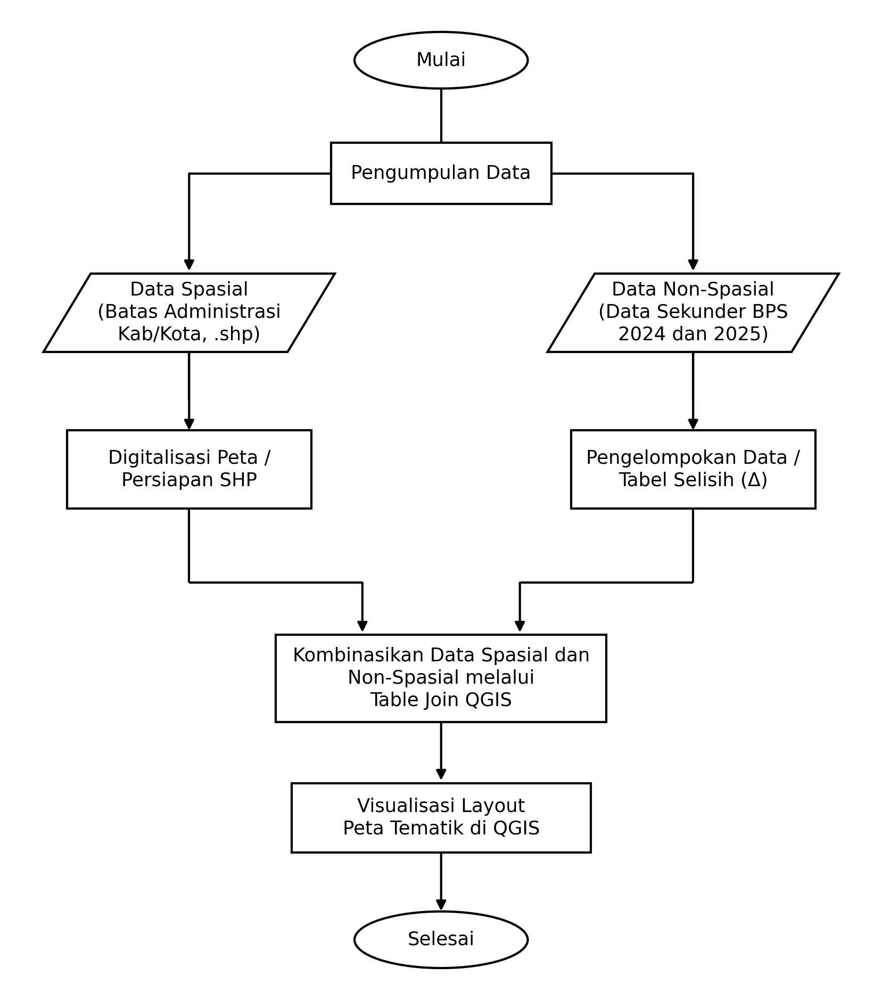

Jaringan internet dan sinyal telepon seluler memiliki peran krusial dalam mendukung komunikasi, percepatan ekonomi digital, akses pendidikan, dan efisiensi pelayanan publik. Seiring melonjaknya kebutuhan akses data cepat, jaringan generasi 4G dan 5G semakin dituntut untuk hadir merata di wilayah pedesaan maupun perkotaan.
Namun, kondisi geografis Provinsi Jawa Tengah yang beragam (membentang dari dataran pesisir utara dan selatan hingga jajaran pegunungan dan perbukitan terjal) menjadi tantangan besar bagi perambatan gelombang radio seluler (Adrianto & Herlambang, 2022). Akibatnya, perubahan ketersediaan sinyal tidak berlangsung seragam di seluruh wilayah.
Total desa penerima sinyal 4G/5G meningkat dari 8.316 desa (2024) menjadi 8.333 desa (2025), atau bertambah +17 desa se-Provinsi Jawa Tengah.
SIG digunakan untuk mengolah data berbasis lokasi spasial dan memvisualisasikan dinamika jangkauan sinyal ponsel dengan batas wilayah administrasi desa dan kabupaten secara presisi (Pangestu & Sumarno, 2023).
SIG mempermudah identifikasi lokasi blank spot atau wilayah berbukit dengan pelemahan sinyal signifikan guna perencanaan penguat jaringan (Adrianto & Herlambang, 2022).
Pemasangan infrastruktur generasi terbaru seperti 5G cenderung teraglomerasi di pusat perkotaan, sehingga pemantauan geospasial berkala penting untuk mencegah melebarnya disparitas digital (Ambadar et al., 2023).
Penelitian ini merupakan studi non-reactive menggunakan pendekatan deskriptif kuantitatif berbasis analisis spasial multitemporal periode 2024 dan 2025.
Peta digital batas wilayah administrasi 35 Kabupaten/Kota di Provinsi Jawa Tengah berformat shapefile (*.shp). Data ini memuat geometri poligon batas wilayah resmi yang diakui pemerintah.
Data tabular sekunder Badan Pusat Statistik (BPS) Provinsi Jawa Tengah mengenai "Banyaknya Desa/Kelurahan menurut Kabupaten/Kota dan Penerimaan Sinyal Internet Telepon Seluler di Provinsi Jawa Tengah" Tahun 2024 dan 2025, khusus pada variabel sinyal 4G/5G/LTE.
Proses pengolahan geospasial disusun secara sistematis mulai dari pengumpulan data hingga menghasilkan visualisasi layout peta tematik di QGIS.

Mengidentifikasi data spasial (peta batas wilayah administrasi Kab/Kota *.shp) dan data non-spasial ketersediaan sinyal 4G/5G dari BPS Jawa Tengah tahun 2024 dan 2025.
Mempersiapkan shapefile dan menghitung selisih jumlah desa bersinyal 4G/5G tiap kabupaten/kota: Δ = Desa2025 − Desa2024.
Menggabungkan data atribut tabel selisih ke dalam layer shapefile poligon batas kabupaten/kota di Quantum GIS menggunakan fungsi Table Join berbasis kunci nama wilayah.
Mengklasifikasikan wilayah ke dalam 3 kelas visualisasi dan mengekspor peta ke dalam layout kartografi standar: